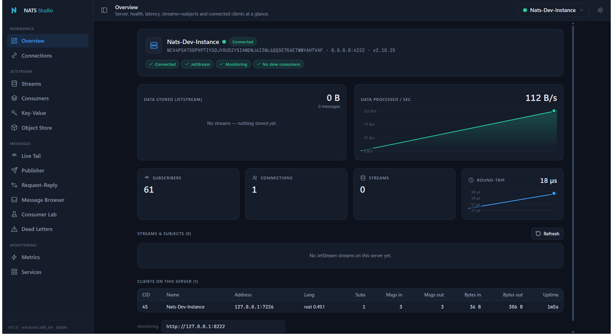

Connect, publish, subscribe, and manage JetStream, Key-Value & Object Store — in one fast, native app. No CLI juggling, no browser tab.

Subscribe to any subject and watch messages stream in — each subscription filtered on its own tab, with instant search and a multi-format payload viewer.
Compose and send in the format your services speak — with templates, variables, and burst mode.
Create streams & consumers, browse stored messages, purge and redeliver — no CLI.
Read and write buckets; stream large objects to and from disk with live progress.
TLS & mTLS profiles, credentials in the OS keychain, and zero telemetry. Your data stays yours.
Free, open source, and one native binary per OS.
Builds aren't code-signed yet — Windows SmartScreen / macOS Gatekeeper may warn on first launch (one-time). You'll need a NATS server to connect to; nats-server -js runs one locally.
Open source, MIT licensed, shaped by the people who use it. Try it, star it, tell us what to build next.